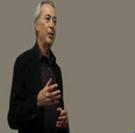
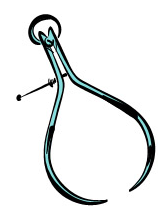
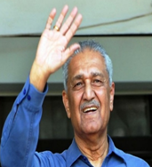
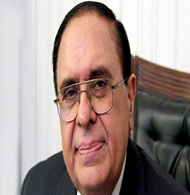
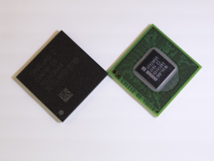
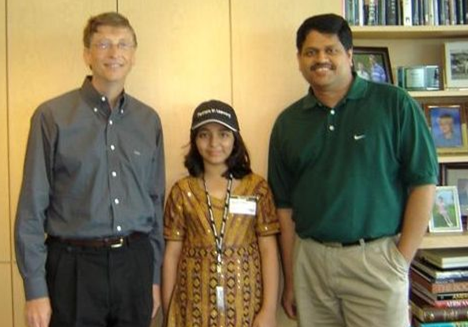
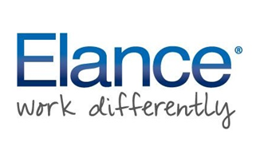

SCIENCE & TECHNOLOGY IN PAKISTAN
CONTENTS
Achievements of Pakistan In Science And technology
- World's largest earth filled dam
- World's highiest density processor
- World's youngest Microsoft Certified Professional
- World's 3rd biggest elance workforce
- World's first Muslim Nuclear state
Pakistan Comparison with the world
Pakistan and the Muslim world
Conclusion
References
INTRODUCTION ABOUT SCIENCE & TECHNOLOGY
Science and technology is a topic that encompasses science, technology, and the interactions between the two. Science is a systematic enterprise that builds and organizes knowledge in the form of explanations and predictions about nature and the universe. Technology is the collection of techniques, methods or processes used in the production of goods or services or in the accomplishment of objectives, such as scientific investigation, or any other consumer demands.
Science may drive technological development, by generating demand for new instruments to address a scientific question, or by illustrating technical possibilities previously unconsidered. In turn, technology may drive scientific investigation, by creating demand for technological improvements that can only be produced through research, and by raising questions about the underlying principles that a new technology relies on.
For the majority of human history, technological improvements were achieved by chance, trial and error, or spontaneous inspiration. When the modern scientific enterprise matured in the Enlightenment, it primarily concerned itself with basic questions of nature. Research and development directed towards immediate technical application is a relatively recent occurrence, arising with the Industrial Revolution and becoming commonplace in the 20th century.
ABOUT TOPIC
As we have discuss above about the meaning of Science and Technology, now moving towards the topic. We are going to discuss the past development of Science & Technology in Pakistan and the present state of it in Pakistan comparing with the Muslim World.
SCIENCE AND TECHNOLOGY IN PAKISTAN
Since independence in 1947, Pakistan has seen an influx of scientists, engineers, doctors, and technicians in the growing field of science and technology. Pakistan is known for possession of strong weapons in the military, a growing base of doctors and engineers, and software engineers.
Nuclear Science
Under the leadership of Prime Minister Nawaz Sharif, Pakistan tested six indigenously developed atomic devices in 1998. Pakistan became the seventh nuclear power country in the world.
As of 2017, nuclear power in Pakistan is provided by 5 commercial nuclear power plants. Pakistan is the first Muslim country in the world to construct and operate civil nuclear power plants. The Pakistan Atomic Energy Commission (PAEC), the scientific and nuclear governmental agency, is solely responsible for operating these power plants. As of 2012, the electricity generated by commercial nuclear power plants constitutes roughly 3.6% of electricity generated in Pakistan, compared to 62% from fossil fuel, 33% from hydroelectric power and 0.3% from coal electricity. Pakistan is not a party to the Nuclear Non-Proliferation Treaty but is a member of the International Atomic Energy Agency. Pakistan plans on constructing 32 nuclear power plants by 2050.
Physics
The first Pakistani winner of a Nobel Prize in Physics was awarded to Dr. Abdus Salam in 1979. In the 1960s and 1970s Pakistani physicists contributed greatly to the fields of theoretical physics, nuclear physics, and other fields.
Prof. Dr. Aslam Khalil
 Prof. Dr. Mohammad Aslam Khan Khalil is a Physicist and Researcher. He has modified scientific understanding of global climate change. He also identified methane’s role as a powerful greenhouse gas, tracing its increase in human activities. His work has contributed to the Kyoto Protocol to limit the emissions of greenhouse gases.
Dr Aafia Siddique
Dr. Aafia Siddiqui was born on March 2, 1972 in Karachi. She attended the University of Houston and then transferred to the Massachusetts Institute of Technology after getting scholarship. She was a brilliant student with great Islamic values. Whenever Pakistan asked the US for help in combating religious extremism, she announced that non Muslims can never be friends with Muslims. Unfortunately Pakistan couldn’t get much advantage from her brilliant mind because of the controversy and her disappearance.
Engineering

Noted and influential engineers and inventors include Munir Ahmad Khan, referred to as the “technical father of Pakistan’s nuclear bomb”; Ashraf Choudhary, scientist in agricultural engineering; and Abdul Qadeer Khan, a Pakistani nuclear scientist and a metallurgical engineer, widely regarded as the founder of gas-centrifuge enrichment technology
Dr. Abdul Qadeer Khan
 Due to this man no one can dare to harm our country because he made Pakistan a Nuclear Power. Apart from this he has a lot of contributions in the field of science and technology. He has been awarded with Nishan-I-Imtiaz. He also made a major contribution in molecular morphology, physical martensite, and its integrated applications in material physics.
Dr. Atta ur Rehman
 Professor Dr. Atta-ur-Rahman is a leading scientist and scholar in the field of organic chemistry. He was elected as a Fellow of Royal Society thereby becoming the one of the 4 scientists from the Muslim world to have ever won this honour. He is awarded Nishan-e-Imtiaz, Hilal-e-Imtiaz, Sitara-e-Imtiaz and Tamgha-e-Imtiaz. He is President of Network of Academies of Sciences of Islamic Countries.
Education and Outlook
Education in Pakistan is of high importance. The country went from only one university at its independence to more than 130 today. There are 730 technical and vocational institutions in the country. Pakistan’s secondary school education system, graduate programs, and advanced degrees are held in high esteem.
At time of independence the literacy rate was 3%. In 2004 47% of Pakistanis were literate. The literacy rate is quickly improving, currently at 55% with education reforms looking to attain a rate of 86% by the year 2015. Pakistani society is largely multilingual, multiethnic and multicultural. Family values are strong and the middle class is growing quickly.
Advancements in science and technology are sure to further blossom in the generations to come.
ACHIEVEMENTS OF PAKISTAN IN SCIENCE AND TECHNOLOGY
In early time of development Pakistan faced lots of miseries but gradually they understand the importance of science and technology and start working on that,soon after they succeed also.
Some identical achievements are:
Worlds Largest Earth’s Filled Dam
 Tarbela Dam is constructed on the Indus River, at Tarbela in Pakistan. The Dam is classified as the World’s largest earth filled dam. While it is termed as the 2nd largest dam by its structural volume. The dam has an elevation of 9000 ft from the sea level while it is 485 ft high from the riverbed. The resulting water reservoir lake has a total surface area of 250 square kilometers. Since its inception, it has played a vital role in irrigation, hydroelectric power generation as well as flood control for Pakistan.
Tarbela Dam is constructed on the Indus River, at Tarbela in Pakistan. The Dam is classified as the World’s largest earth filled dam. While it is termed as the 2nd largest dam by its structural volume. The dam has an elevation of 9000 ft from the sea level while it is 485 ft high from the riverbed. The resulting water reservoir lake has a total surface area of 250 square kilometers. Since its inception, it has played a vital role in irrigation, hydroelectric power generation as well as flood control for Pakistan.
World’s Highest Density Processor
 The research and development of microprocessors has played a vital role in the computers, smart devices and telecommunication revolution that we see today. In this context, a team of Pakistani engineers from the company Avaz Networks, under the supervision of Dr Shoaib A. Khan, designed the World’s highest density media processor for Voice Over Ip applications (VOIP). This single chip processor has the unique capability to handle to 2000 simultaneous VOIP calls.
World’s Youngest Microsoft Certified Professional

The title of the world’s youngest Microsoft certified professional from 2004-2008 was also held by a Pakistani girl named Arfa Abdul Karim Randhawa. She was only nine years old when she acquired this title. She was personally invited by Bill Gates, the founder of Microsoft, to meet her. She also represented Pakistan at many tech and computer conferences. However, her story had a tragic end as she died of cardiac arrest aged just 16.
World’s 3rd biggest elance workforce
 Elance is termed as the world’s largest online platform where recruiters as well as freelancers from around the world interact with each other. The recruiters mostly post jobs related to the Web and mobile application development, Graphic designing, creative/technical writing, scientific problem solving, marketing and administration etc. There are free lancers from 158 countries that compete to win and execute those jobs. Hence, the market is highly competitive but Pakistanis accounts for one third of free lancers work force. Currently, Pakistani work force earns 500 million dollars a year in terms of revenues from Elance.
World’s First Muslim Nuclear State
 The design of the nuclear bomb is a complex challenge requiring expertise in multiple theoretical and experimental sciences. On top of that, this technology and related equipments are highly classified. That is why, only 7 nations in the world declare to have this technology. Pakistan on 28th May 1998 became the first and the only muslim country to possess this technology by successfully exploding six nuclear devices.
The design of the nuclear bomb is a complex challenge requiring expertise in multiple theoretical and experimental sciences. On top of that, this technology and related equipments are highly classified. That is why, only 7 nations in the world declare to have this technology. Pakistan on 28th May 1998 became the first and the only muslim country to possess this technology by successfully exploding six nuclear devices.
PAKISTAN COMPARISON WITH THE WORLD
According to the Global Innovation Index (GII) 2016, co-published by Cornell University, INSEAD and the World Intellectual Property Organisation, Pakistan ranked 119 of 128 countries surveyed. Switzerland has topped the list for the sixth time in a row.
The GII survey is an annual ranking of the innovation capabilities and results of world economies. It uses 81 indicators across a range of themes such as the innovation output sub index, innovation efficiency ratio, political environment, regulatory environment, and business environment.
| Country/Economy |
Score(0-100) |
Rank |
Income |
Rank |
Region |
Rank |
| Nepal |
23.13 |
115 |
LI |
10 |
CSA |
8 |
| Nicaragua |
23.05 |
116 |
LM |
24 |
LCN |
18 |
| Bangladesh |
22.86 |
117 |
LM |
25 |
CSA |
9 |
| Cameroon |
22.82 |
118 |
LM |
26 |
SSF |
18 |
| Pakistan |
22.63 |
119 |
LM |
27 |
CSA |
10 |
| Venezuela |
22.32 |
120 |
HI |
49 |
LCN |
19 |
Although the country’s ranking improved from 131 in 2015 to 119 this year, the number of countries included in the survey also decreased from 141 last year to 128 in 2016. Meanwhile, the country’s overall score fell slightly from 23.07 in 2015 to of 22.63 this year.
PAKISTAN AND MUSLIM WORLD
The Muslim world is in a state of turmoil. I use the term “Muslim world”asa collective classification not meant as a Manichean opposite to the ‘civilised’ West, but because the concept of Ummah is a creedal belief that resonates with 1.5 billion Muslims around the world.
Pakistan stands today as the strongest Muslim nation state from a military perspective; being the only Muslim country with nuclear weapons and a standing army of nearly 700,000 personnel (sixth biggest in the world) – no other Muslim country comes close.
Hence,
Pakistan is a beacon of hope for muslim world.
CONCLUSION
It needs to be understood that development is a multifaceted process, and a number of factors must dovetail together before economic growth and progress can occur. In my opinion, five key components must come together. First, the development process must be built on a foundation of high degrees of literacy and quality education at all levels. The Afro-Asian countries have vast populations at their disposal, and the challenge is to transform this resource into wealth. In order to unleash their creativity, the Third World countries must expose their youth to a challenging educational environment that teaches them to think and find novel solutions to difficult problems.
The government has taken many steps to improve the standard of education and research in Pakistan, the most important step, in my opinion, is the establishment of the Higher Education Commission. The commission, which is in the process of formulation, has already done good work to prepare its action plan for attainment of international standards in the quality of education, research, and development. The commission is working to tailor higher education programmes to national needs and socio-economic development. The government has announced a substantial increase in funding to universities through the commission.
In Pakistan, due to negligence and faulty vision of planners in successive governments, the science and technology sector was never given the status required to effectively use it as a contributor to national and economic growth. Due to meagre funding provided by the government, our R&D institutions could not produce any valuable research. Lack of proper facilities and environment for research in the universities and research institutes led to deterioration in the standard of higher education to the extent that today our universities have been relegated to the status of low-level colleges in which valuable university-economy links are totally missing.
REFERENCES
https://tribune.com.pk/story/1657805/1-pakistan-significant-importance-muslim-world-imam-e-kaaba
https://www.pakistantoday.com.pk/2017/10/10/pakistan-a-beacon-of-hope-for-the-muslim-world/
http://www.technocrazed.com/top-10-amazing-achievements-of-pakistan-in-science-and-technology
https://www.google.com.pk/search?q=pakistan+position+in+muslim+world+according+to+scientific+development&rlz=1C1CHBF_enPK794PK794&oq=pakistan+position+in+muslim+world+according+to+scientific+development&aqs=chrome..69i57.29785j0j8&sourceid=chrome&ie=UTF-8
https://tribune.com.pk/story/1050186/decline-in-standard-pakistan-hits-bottom-in-innovation-ranking/